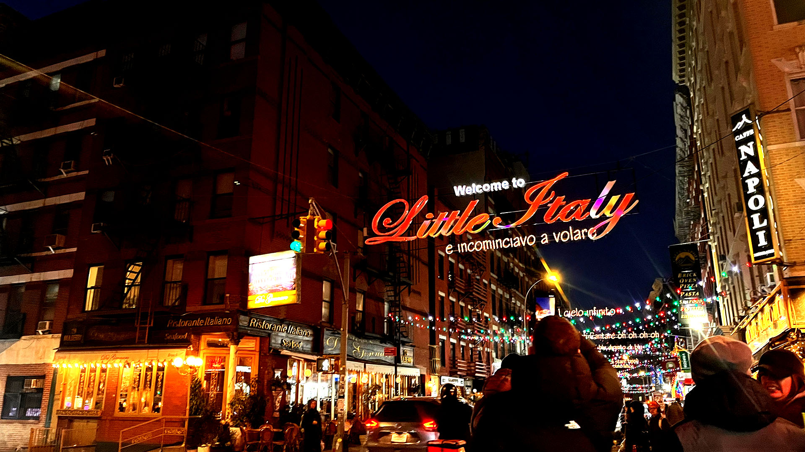

This first photo was taken in little Italy and even though there were many people, it felt like peaceful and magical because I was with my friends. I used the lights at night and the way I framed the photo to make the photo feel calm and special.